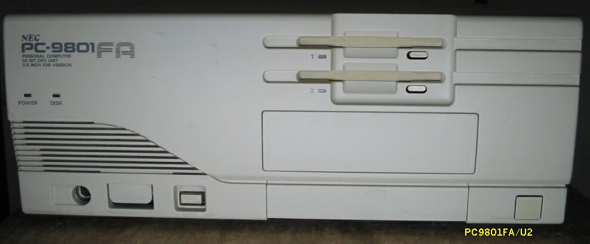
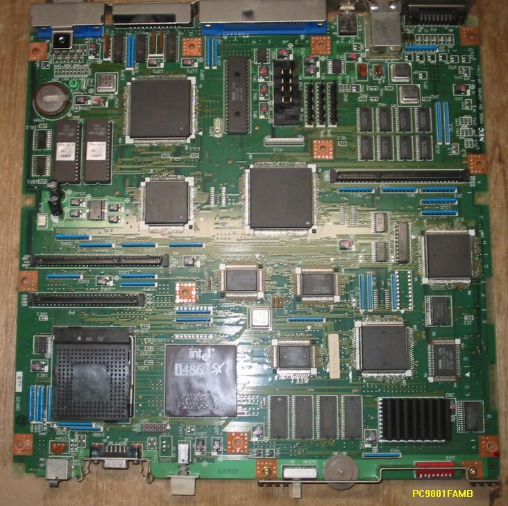

PC9801FA
PC9801FA/U2

PC9801FAのマザーボードG8KZE

PC9801FAの仕様
このPC9801FAは1992年1月発売で、主な仕様は次のようなものです。
型 名 ：PC-9801FAmodelU2
価 格 ：458000
CPUクロック ： 386 8M/16M相当i486SX16MHz
ROM ： BIOS及びN88-BASIC(86)96KB
標準RAM ： 1.6MB
最大ユーザーズメモリ ： 14.6MB
グラフィックVRAM容量 ： 256KB
グラフィックVRAM画素数： 640*400
グラフィックVRAM色数 ： 4096色中16色2画面
サウンドVRAM ： 16KB
テキストVRAM ： 12KB
拡張スロット数 ： 4
拡張スロット電源容量 + 5V ：0.8A
+12V ：0.06A
-12V ：0.07A
標準実装ドライブ FDD ：3.5インチ1M/640KFDD*2
内蔵インタフェースコネクタ：1MFDDI/F プリンタI/F RS-232CI/F
：マウスI/F デジタルB/WI/F アナログCRTI/F
漢字 ：標準:第一、第二、拡張
サウンド機能 ：FM3音/SSG3音
カレンダ時計 ：μPD4900相当年サポートあり
ＶＣＣＩ適合 ：基準レベル0
使用条件 電圧 ：AC100V±10%
周波数：50/60
温度 ：10～35
湿度 ：20～80%(結露なし)
消費電力 標準 (W) ：35
最大 (W) ：185
エネルギー消費効率 (W) ：35
外形寸法 本 体 (mm) (W)：380 (D)：335 (H)：150
キーボード(mm) (W)：435 (D)：180 (H)：34
重量 本体 (Kg) ：9
この９８には、あまり思い入れがなく、工場の制御用の予備機が壊れて困っているという方に、
譲渡してしまいました。これにコプロ487SXを入れて使いたいのだそうですが、487SXは秋葉原
でも見つけることができないほどレアで、廃棄された487SXの入っている本体から回収する以外
道はなさそう。
(2002/12/22記)
PC9801のページに戻る